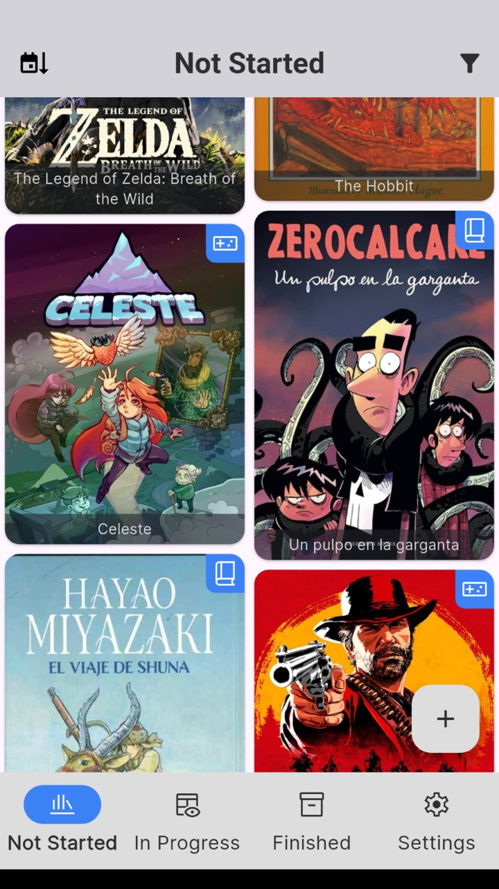
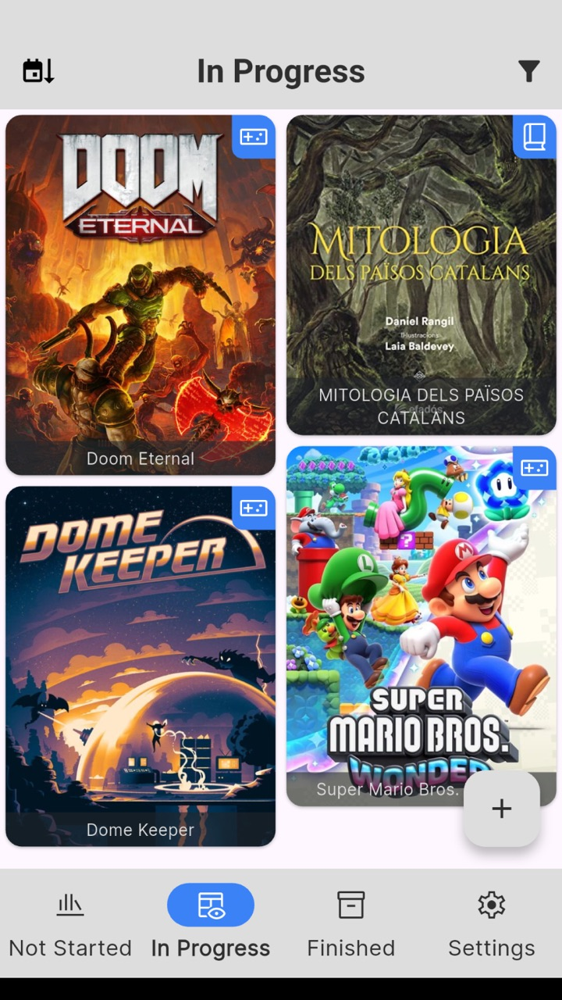
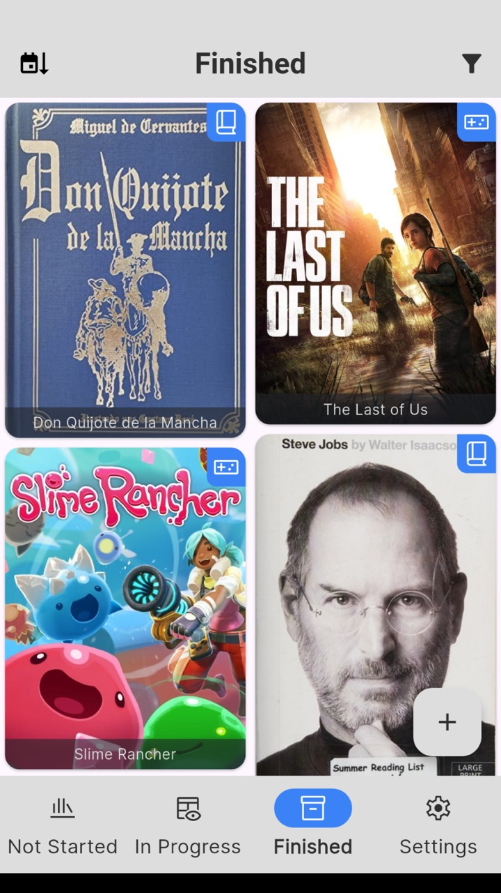
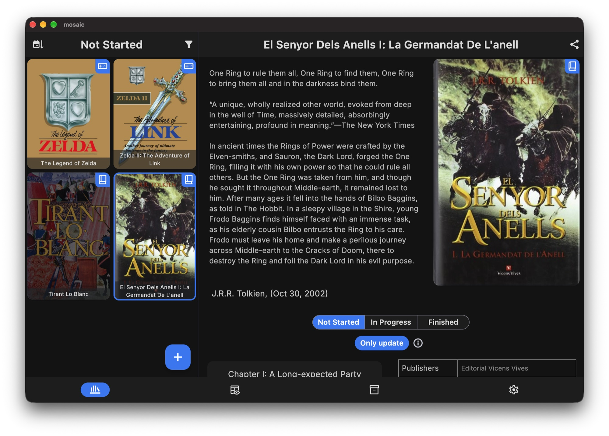
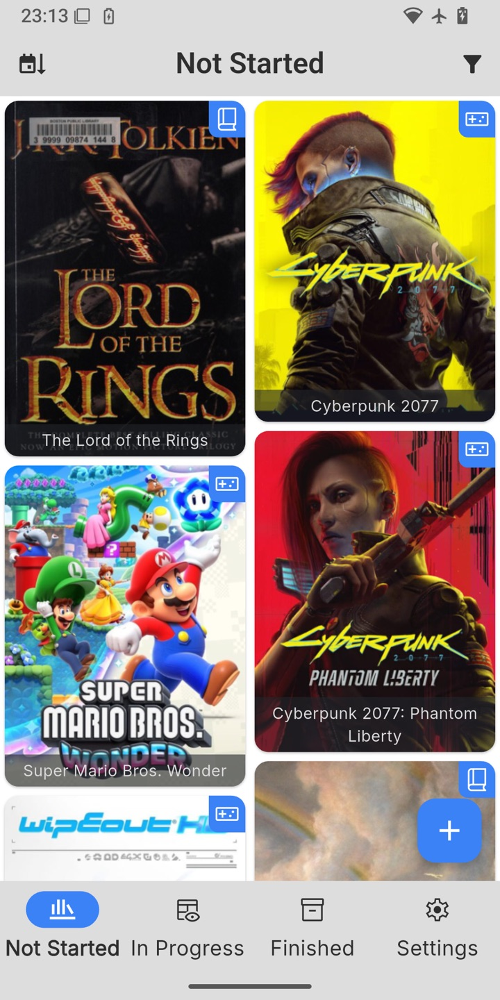
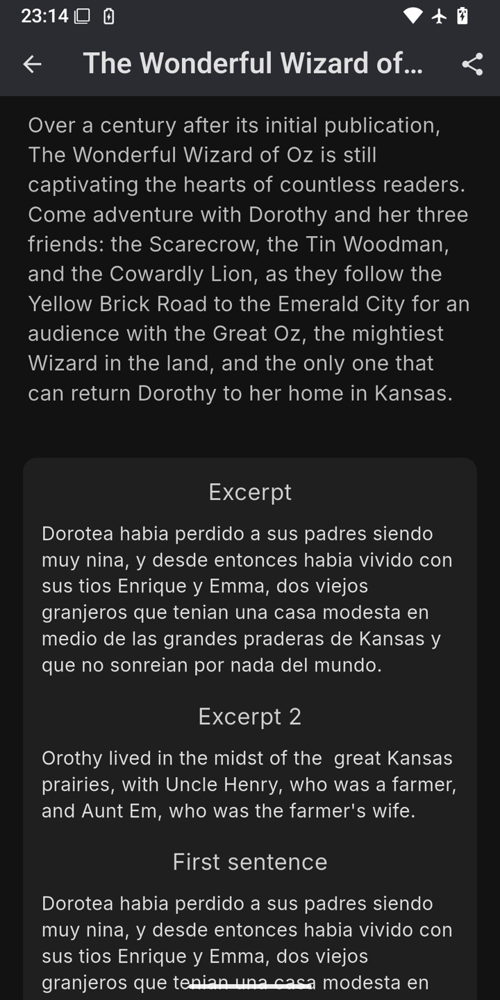
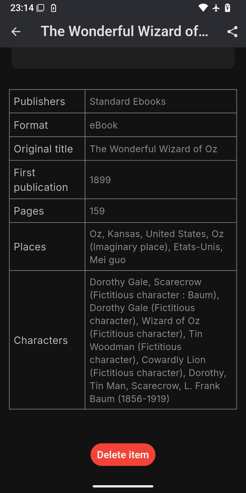
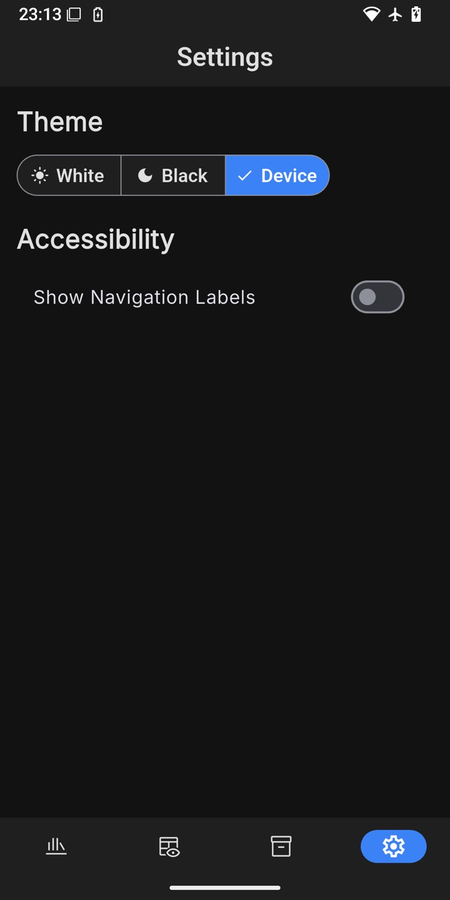

Mosaic
A leisure-management app built with Flutter to catalogue games and books in one place: online database search, progress status and a waterfall grid of cover art. Everything is stored on the device, no account required.
It started as the final project for the Flutter course (December 2025), developed by me with no AI tools, and has kept growing since.
Delivery video (December 2025)
Recorded as the course wrapped up, before the project kept growing.
Quick facts
| Field | Value |
|---|---|
| Role | Sole design and development |
| Year | 2025–present |
| Origin | Flutter course project (December 2025) |
| Platforms | iOS, Android, macOS |
| Tech | Flutter (Dart), Provider, Hive CE |
| Status | Personal project, open source and in progress |
| Code | github.com/ovilaro/mosaic |
Context
- The problem — free time ends up as endless scrolling and the backlog never stops growing.
- The approach — an app to manage the leisure we actually want to consume: what is pending, what is half done and what is finished.
Features
- Search & add — games via IGDB and books via Open Library.
- Progress tracking — Not Started, In Progress or Finished.
- Waterfall grid with the collection's cover art.
- Category filters (games, books or both), with separate settings per tab.
- Sorting by date added or modified, ascending or descending.
- Detail view with cover art, description and a metadata table.
- Share an item with its cover image.
- Dark and light themes — white, black or follow the device.
- Accessibility — navigation bar labels for screen readers.
- Offline-first — local data with Hive CE, no account.
- Adaptive layout — from 900 px wide, grid and detail sit side by side.
Method
I took the Flutter course to learn, and the final project was Mosaic, with no agent involved. Once it ended I wanted to learn agentic programming and used Mosaic as a practice ground: the goal was learning to work with agents, and the app improved as a side effect. The project has been run that way ever since: a conventions document in the repository, AGENTS.md, describes the architecture, the data model, theming, API rules and the widget catalogue, and every session starts from the same context and the same rules instead of an improvised prompt.
- Conventions in the repository —
AGENTS.mdhas been at the root since April 2026 and is revised as the project changes. - Hard rules — generated files (
.g.dartand the Hive schema) are never edited by hand: any model change goes throughbuild_runner. - Work done under this flow — migration from Isar Community to Hive CE (which unblocked
build_runner2.15.1 → 2.16.1), CocoaPods replaced by Swift Package Manager on iOS and macOS, and an up-to-date toolchain (Flutter 3.47.5, AGP 9.1, Gradle 9.3.1, Kotlin 2.4).
Written by me; agents came later
Mosaic is the final project for the Flutter course (December 2025) and I developed it myself, with no AI tools. After the course I started learning agentic tools out of my own interest and practised with the app. Since April 2026 the sessions are agentic: I define the problem and the rules, the agent proposes the change and I review it, test it and commit it. Nothing reaches the repository without that review.
Agent evaluation
Test bench: reviewing pending changes with local models on an RTX 2060 12 GB and 32 GB of DDR4, moving from Ollama to llama.cpp. After comparing quantisations and models (Qwen3.8 27B, Qwen3.5 9B, Qwen3.5 35B-A3B MoE, Gemma 3 and Gemma 4), I settled on Qwen3.6-35B-A3B MoE at UD-IQ3_XXS, with offload and 128k of context (64k with vision enabled). In the cloud I tried Ollama Cloud, Codex and Claude Code, and settled on OpenCode Go with DeepSeek 4.1 Flash for cost/intelligence, with the local Qwen as fallback.
What I compare is the code review each model gives me: I know which changes are there and which are missing, so I can see which one gets them right, which invents them and which misses them. The AGPL code is the reference truth.
Tool choice isn't about popularity: cost per session, requests per euro and data retention (ZDR).
Technical decisions
- Hive CE instead of Isar — Isar Community had all but stopped being maintained, which blocked Flutter upgrades. The migration was my call and I did it quickly with AI assistance; the app had no production data yet, so there was nothing to lose. The result: Flutter upgrades unblocked and
build_runnerup to date (2.15.1 → 2.16.1). - Swift Package Manager instead of CocoaPods — CocoaPods is in maintenance mode and its registry becomes read-only on 2 December 2026; Flutter already defaults to Swift Package Manager. I migrated the project so it wouldn't be stuck without dependency updates. The result: native builds on iOS and macOS, with no pods in between.
Screenshots
Delivery screenshots (December 2025)



Current screenshots
The two wide screenshots are the macOS version.






